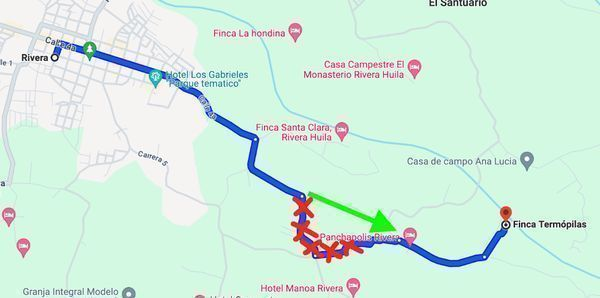
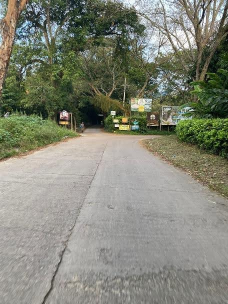
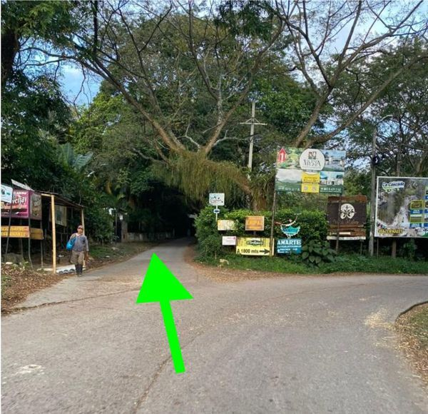

Ruta desde el centro de Rivera, Huila
Te pasamos la ruta desde el centro de Rivera, Huila.
¡IMPORTANTE! Google Maps muestra un camino que te marcamos en ROJO y que lleva a un callejón sin salida; NO lo vayas a tomar.
El camino correcto está marcado con la flecha VERDE:

Punto de referencia del cruce:


Ubicación en Google Maps
Puedes encontrarnos directamente en Google Maps:
Videos de ayuda
Video desde el pueblo:
Este video muestra el recorrido desde el centro de Rivera hasta la Finca Termópilas.
Video desde el portón:
Este video muestra el recorrido desde el portón de entrada hasta la Finca Termópilas.